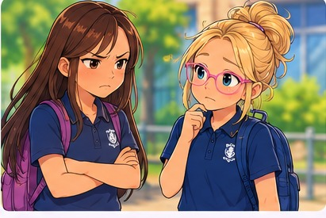

Body Language Detective 🕵️♀️
Sometimes people communicate without words. Their hands, shoulders, movements and distance can give us clues.
One gesture can have many meanings. We can notice, listen and ask.
1. Gesture Explorer 👋
Tap a gesture to discover what it might communicate.
2. What might it mean? 🔎

What could Indie think or do?
3. Ways to show you're listening 💜
People listen in different ways. Choose a comfortable option and see what it can communicate.
Looking briefly towards someone's face can help you notice an expression. You can also turn towards them, nod, respond with words or look nearby.
4. Put the clues together 💬
Taylor smiles, turns towards Indie and says, “I went horse riding!”
What could Indie say if she wants to join in?
Body Language Detective!
You've explored gestures, personal space, listening and putting clues together.
Real-life practice: If Indie wants, try a wave, nod or friendly question with someone she feels comfortable around. No pressure to perform.